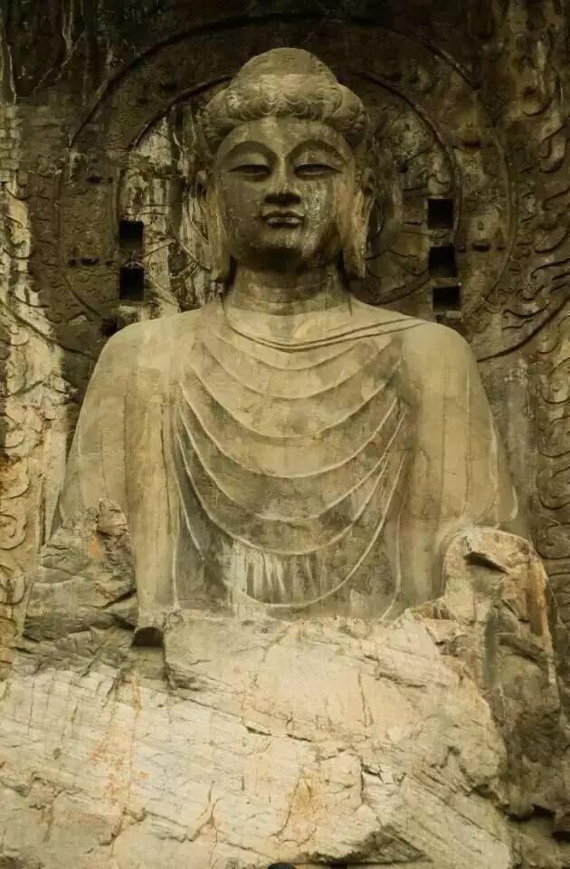

【行者明信片·壹·体历文化，行者无疆】
﹃
七
朝
古
都
丨
安
阳
﹄
·
·
·
·
·
第
一
站
文化博物馆&殷墟
吃过早餐，步行40余分钟，只为一睹文字渊源。
中国文字博物馆以文字为线，牵连古今。早在甲骨文出现之前，以图代文的“文字”便已出现：象形、指事、会意……直至商朝甲骨文逐以成型。殷商以降，文字逐渐普及。作为官方文字的金文，形制比较一致，走向民间却又各自开花。秦皇一统天下，车同轨，书同文，隶书现。其后，楷、行、草各据一隅，浓墨重彩，列据八方。
兰亭已矣，梓泽丘墟。殷墟古迹仿佛昭显殷商旧事，沉睡千年，文化却在不停蔓延。千古兴亡多少事，悠悠，不尽长江滚滚流。
哈哈
第 2 站
The second state
白
1
登封

少林寺&三皇顶
早上六点，空气微凉，启程少林。
如果说泰山文化是巍峨磅礴的，那么嵩山文化必定是婉转秀美的。少室山脚下群苍葱翠，武校学生踏着晨光跑步锻炼。少林寺宁静雅然，鸽声清脆婉转。禅宗祖庭见证着千余年佛教兴衰与荣辱——步步生莲，文武兼修，少林不张扬，却留名青史。

去往三皇庙的路途曲折婉转，沿途沉积岩势如剑削，道旁树林阴翳，山间蝉声昂扬。至于负者歌于途，行者休于树，途虽远，身虽疲，意致依然。
从山的一端到另一端，从清晨到傍晚，路漫漫修远，行者亦无疆。
T
F
白马寺&丽景门
龙门石窟
第
三
站
古都洛阳
O
T
R
F
白马寺&丽景门
作为中国第一古刹，白马寺承载了佛教最早燃及中华大地的星星火焰，白马负经，因而得名。经历代修葺，白马寺虽历经战火，规模仍旧不减当年。印象深刻的是玄奘作为一个尊者被供奉在众尊者之中，遥想当年玄奘求经的艰辛和他对中华佛学的贡献，我不禁对他俯身一拜，人生的价值应如何？箪食瓢饮，不改其乐，足矣。
白马寺作为中国佛学的地址起源，现今也跟随着全球化的步伐，包含着印度、泰国、缅甸的佛学文化。世界佛教各处生根发芽，不变的，还是劝人向善。一如白马寺的观音菩萨——“问观音为何倒坐？因世人不肯回头。”

龙门石窟
隐居于群山之间， 怀虚的的龙门石窟给我带来的感觉是震撼的。雕塑繁而精致，蔚为壮观。景随步移，洞门石窟犹如一幅缓缓展开的画卷——佛的典雅出尘，佛的厚重大方，佛的心系众生，佛的胸怀天下。我们多爱临时抱佛脚，鲜花礼佛以求渡过厄难，可是信仰的真正含义，从来就不会是救赎。所谓佛渡有缘人，如何抓住这妙不可言的缘呢？天道酬勤，自助者，天助之。
站在伊水桥上，耳畔风声萧萧，河面微波粼粼。自己仿佛回溯至这香山的历史尽头，心情澎湃而意兴萧索——身边的伊水还是当年的伊水，可眼前的佛陀雕像90%以上已被人为破坏！杜甫说“戎马关山北，凭轩涕泗流”，扶栏轻叹，想也不过如此。
行
者
无疆实践团

扫描二维码关注行者酱
QQ号：2758025831
来源：行者无疆实践团